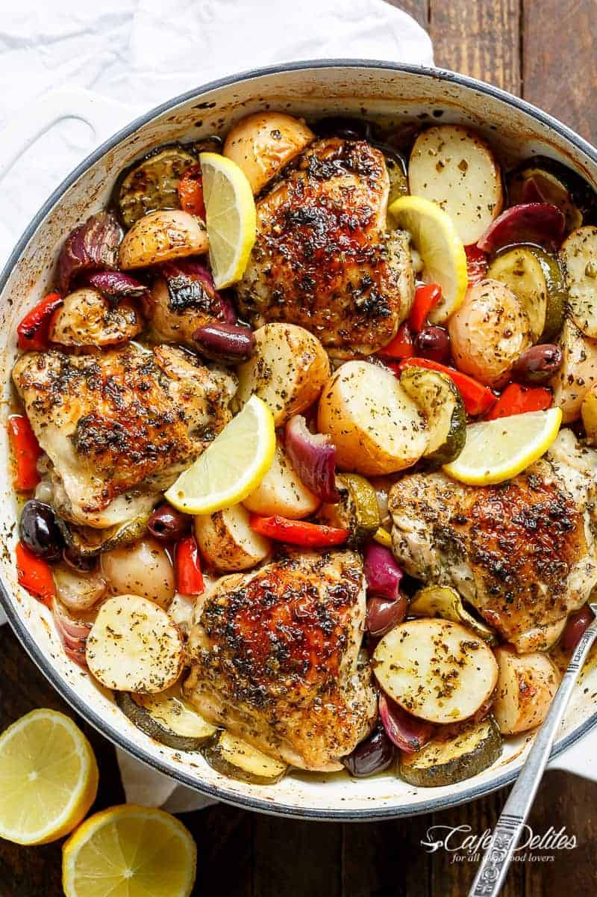

Garlic Lemon Herb Mediterranean Chicken

Description
Garlic Lemon Herb Mediterranean Chicken And Potatoes, all made in the ONE PAN for an easy weeknight dinner the whole family will love!
Juicy, crisp chicken infused with lemon, garlic and herbs, baked in the same pan as crispy potatoes, charred peppers (capsicums), zucchini and onion. A complete meal in a pan ready in less than an hour!
Ingredients
- 4 chicken thighs skin on and bone-in
- ¼ cup lemon juice juice of 1 lemon
- 3 tablespoons olive oil divided
- 1 tablespoon red wine vinegar
- 4 cloves garlic crushed
- 3 teaspoons dried basil
- 2 teaspoons dried oregano
- 2 teaspoons dried parsley
- 2 teaspoons salt plus extra
- 8 baby potatoes halved
- 1 red onion cut into wedges
- 1 red bell pepper deseeded and cut into wedges
- 1 zucchini large, sliced
- 4 tablespoons pitted Kalamata olives
- 4 lemon slices to serve
Steps
- Pat thighs dry with paper towel. In a shallow dish, combine the lemon juice, 2 tablespoon of olive oil, vinegar, garlic, basil, oregano, parsley and salt. Pour out half of the marinade and store in a jug to use later.
- Add the chicken to the marinade in the dish and coat evenly. Cover and marinate for 15 minutes if rushed; 1 hour if time allows; or over night, turning each chicken thigh occasionally in the marinade.
- Preheat oven to 220°C | 430°F. Heat the remaining 1 tablespoon of olive oil in a large oven-proof pan or skillet over medium-high heat. Sear the chicken on both sides until golden browned (about 4 minutes each side). Drain some of the excess fat, leaving about a tablespoon for added flavour.
- Arrange the vegetables around each chicken thigh. Drizzle the vegetables with the remaining marinade, tossing them through the oil mixture to evenly coat.
- Cover skillet or dish with lid (or foil), and bake until the potatoes are soft and the chicken is completely cooked through (about 35 minutes). Change oven setting to grill / broil on a medium heat setting; uncover and cook for about 5-10 minutes, or until chicken and potatoes are crispy and golden browned. Serve with olives and lemon slices.